Lançamentos
Imóvel 1
Valor: R$ 950.000,00
Rua Lomas Valentinas, 60 -Jardim Vinte e Cinco de Agosto.
Totalmente plana, sem escadas ou desníveis, ela foi pensada para oferecer liberdade e praticidade.
São 3 quartos generosos, iluminados,uma sala majestosa, com impressionantes 28 metros quadrados.
A área de serviço é ampla e arejada, e o quintal convida a momentos de descontração, sol e liberdade. Na frente, um jardim encantador com vasos decorativos traz aquele toque de carinho e beleza que fazem toda a diferença.
Ele está situado em um bairro reservado, seguro e totalmente familiar, onde o sossego reina.
E vigiada 24 horas por segurança privada, com portões de acesso controlado e guarita na entrada.
Agente sua visita .
Imóvel 2
Valor:R$ 2.890.000,00
Encante-se com essa jóia rara no condomínio Santa Mônica Residências - Barra da Tijuca-Rua Pedro Ludovico, 195
Na área externa frontal, o charme do jardim com fonte decorativa se une funcionalidade da cisterna com 15 mil litros.
Nos fundos, o lazer é completo: piscina, churrasqueira com bancada de apoio, sauna a vapor com chuveiro, além de banheiro e chuveiro externo para maior praticidade.
No segundo pavimento, a casa oferece duas suítes confortáveis, sendo uma suíte master com closets espaçosos, um banheiro de corredor e um mezanino encantador, usado como sala íntima ou escritório.
O terceiro pavimento reserva ainda mais privacidade, com dois quartos (um com closet), banheiro completo e uma sala íntima acolhedora, ideal para relaxar, meditar ou montar um espaço de leitura.
Imóvel 3
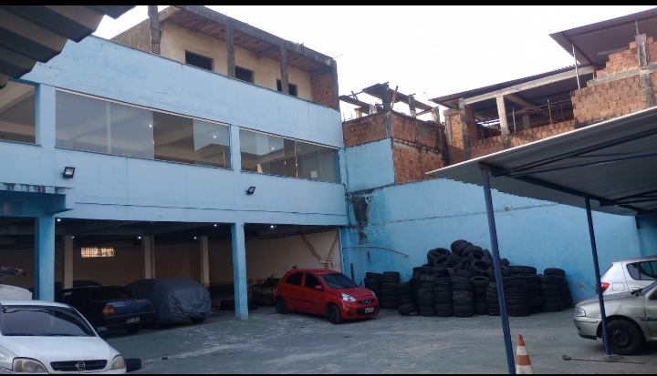
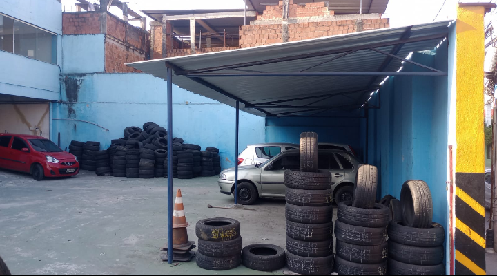


Valor: R$ 10.000.000,00
Imóvel amplo com quadra coberta - ideal para escolas, igrejas, clínicas, hospitais ou e...
Prédio com 3 pavimentos estruturados,Diversas salas amplas, bem ventiladas e iluminadas naturalmente
Muro alto com cerca de segurança e sistema básico instalado.
Inúmeras possibilidades de uso:
Local com infraestrutura urbana consolidada e fácil acesso
Estrutura adaptável para atender normas sanitárias e acessibilidade.
Espaços amplos que favorecem projetos de reforma ou personalização.
A quadra coberta pode ser aproveitada para atividades físicas, encontros ou transformada em estacionamento coberto.
Este é o tipo de imóvel que oferece flexibilidade, segurança e ótimo custo-benefício, seja para investimento ou instalação de uma operação consolidada.
Entre em contato e agende uma visita para conhecer de perto esse imóvel que pode ser a base do seu próximo grande projeto!
Imóvel 4
Valor: R$ 2.500.000,00
Galpão Comercial Venda em Duque de Caxias - Esquina Estratégica com Grande Potencial!
Localizado na movimentada Rua Manuel Telles, em Duque de Caxias
Este galpão é como uma tela em branco esperando um novo projeto para acontecer.
Com visão e criatividade, pode se transformar em um ponto de referência na cidade.
Agende uma visita.
Imóvel 5

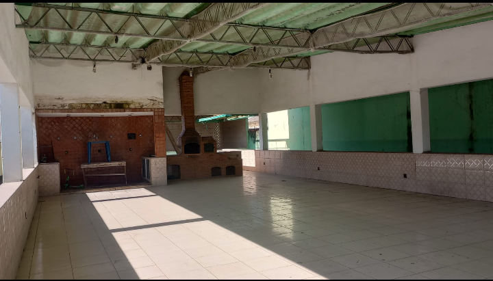
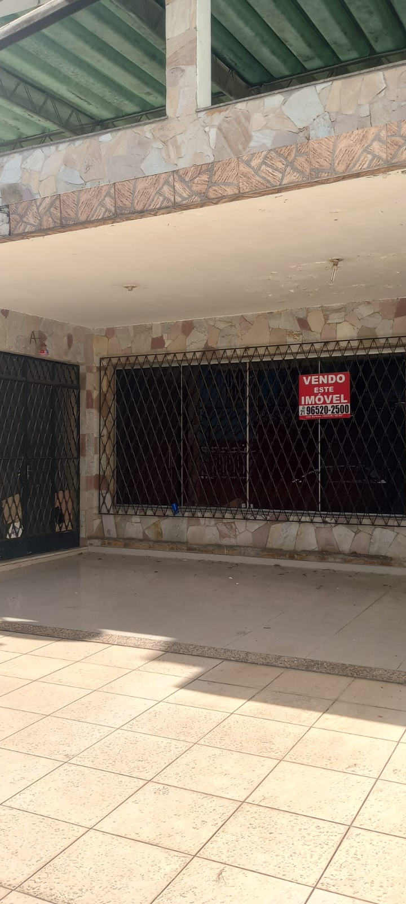
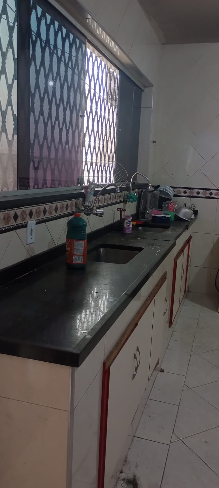
Valor: R$ 750.000,00
Lindo imóvel de 5 qts na Rua João Teles - Parque Centenário..
Mansão histórica e imponente em Duque de Caxias - Antiga residência do ex-prefeito Juberlan de Oliveira
Apresentamos uma oportunidade única de adquirir uma mansão de alto padrão, com valor histórico.
Localizada em uma das regiões mais tradicionais de Duque de Caxias.
Este imóvel foi a residência do ex-prefeito Juberlan de Oliveira, que governou o município entre 1986 e 1988.
Marcando um período importante na história política local.
Com projeto arquitetônico diferenciado e ambientes amplos, a propriedade oferece conforto, elegância e diversas
Imóvel 6
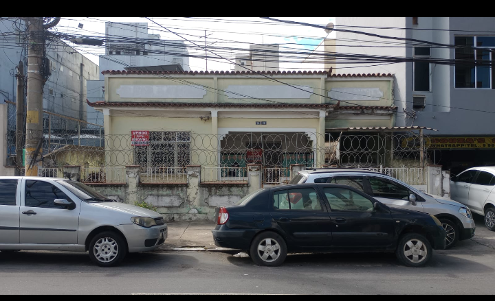

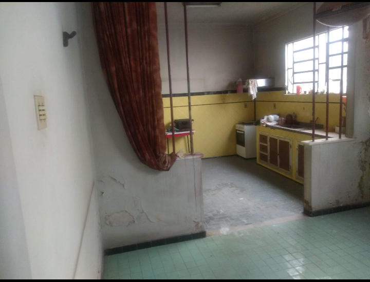
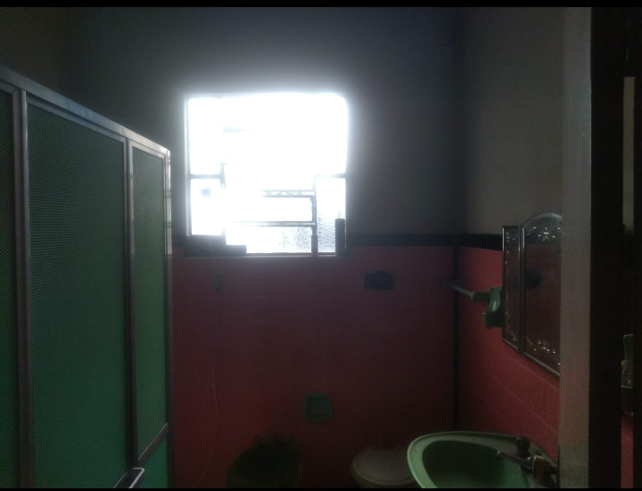
Valor: R$ 1.000.000,00
Duque de Caxias - Jardim Vinte e Cinco de Agosto
Excelente localização, rua tranquila, próximo a tudo!
Imóvel tem 3 quartos, sendo 1 suíte com banheira e closet.
1 banheiro social com banheira, cozinha ampla com armários.
Sala ampla, vaga, área gourmet, e banheiro no terraço coberto.
Nos fundos dependência de empregada completa. Imóvel precisando de uma guaribada!
Imóvel 7
Valor: R$ 1.000.000,00
Duque de Caxias - Jardim Vinte e Cinco de Agosto - Rua General Mitre, 74
Terreno medindo 12 X 30 com um imóvel de três quartos sendo uma suíte, sala, cozinha, banheiro social.
Todos os cômodos são amplos e arejados, varanda, quintal, vaga para quatro carros, terraço coberto.
Nos fundos tem mais dois cômodos que podem ser transformados em dependência de empregada.
ATENO: O imóvel precisa de reforma!
IPTU 1500,00.
Imóvel 8
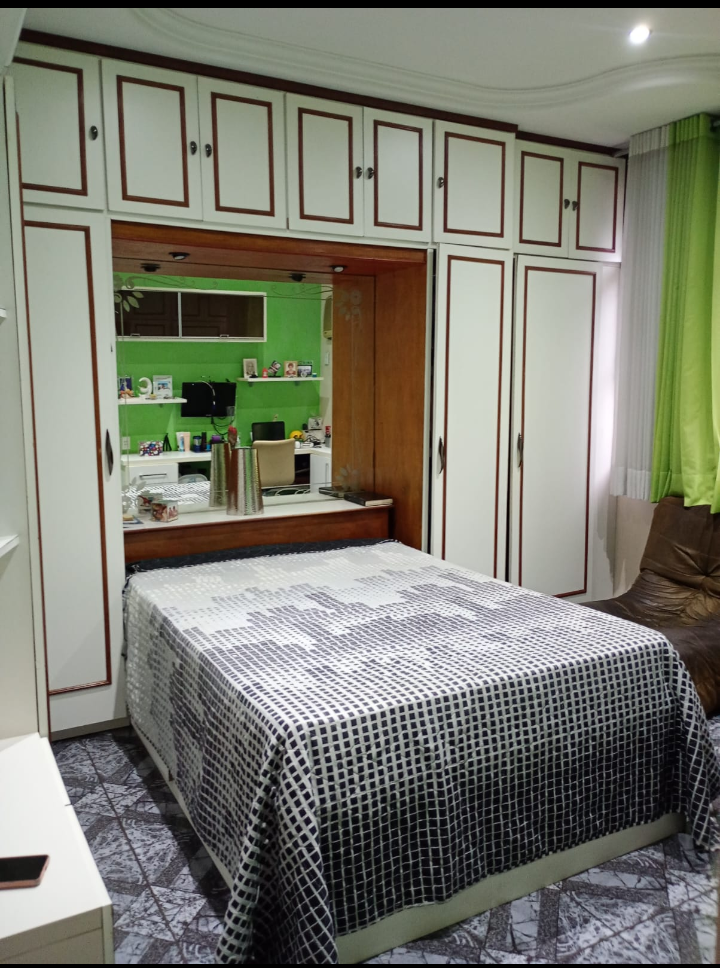
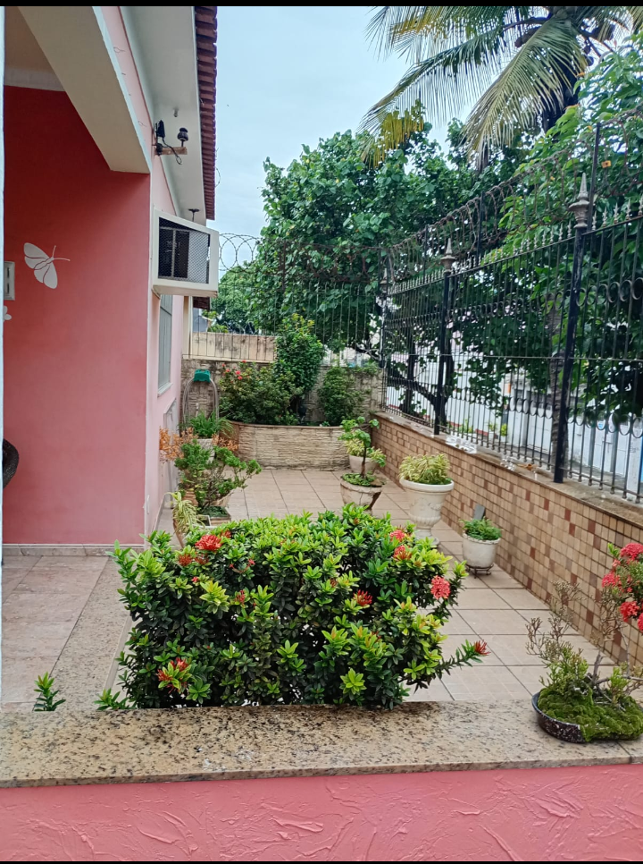

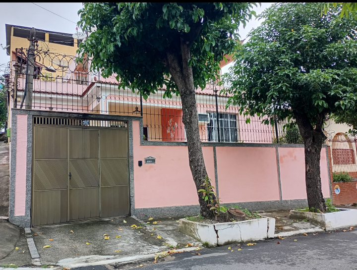
Valor: R$ 900.000,00
Terreno venda na Vila Itamarati
Excelente localização para galpão ou empresa
Oportunidade imperdível em Duque de Caxias!
Terreno plano com 500m² (10x50m), localizado na Rua Itamaracá.
Vila Itamaraty uma região estratégica, com ótimo fluxo de veículos e fácil acesso.
Terreno amplo, ideal para construção de galpões, depósitos, igrejas, ou sede de empresa
Dois imóveis construídos no local, cada um com 2 quartos, sala, cozinha e banheiro .
Estruturas confortáveis e bem distribuídas
Próximo ao centro de Caxias, Vila São Luís.
Imóvel 9
Valor: R$ 900.000,00
Duque de Caxias - Jd Vinte e Cinco de Agosto
Imóvel bem localizado, próximo de tudo, bairro nobre, rua tranquila e arborizada.
Imóvel com 2 quartos sendo 1 suíte com closet.
Dependência de empregada completa no terraço,
Sala ampla, cozinha ampla com armários planejados e coifa.
Banheiro social com blindex, 3 vagas de garagem, terraço coberto com área gourmet.
Piscina, energia fotovoltaica, sala, suíte e cozinha desenvolvidos por arquitetos.
Incluso todos os embutidos,Documentação cristalina.
Mas informações pelo whatsapp


 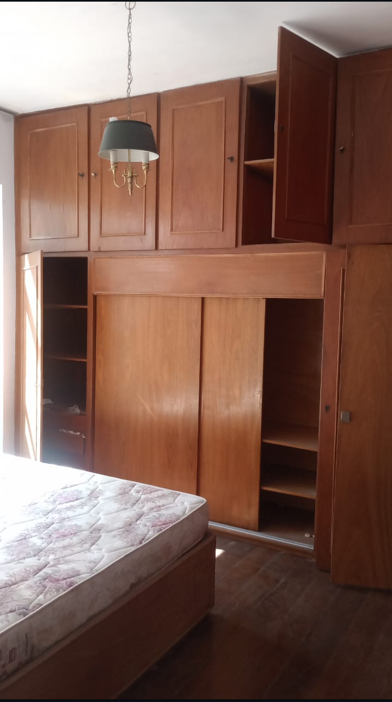
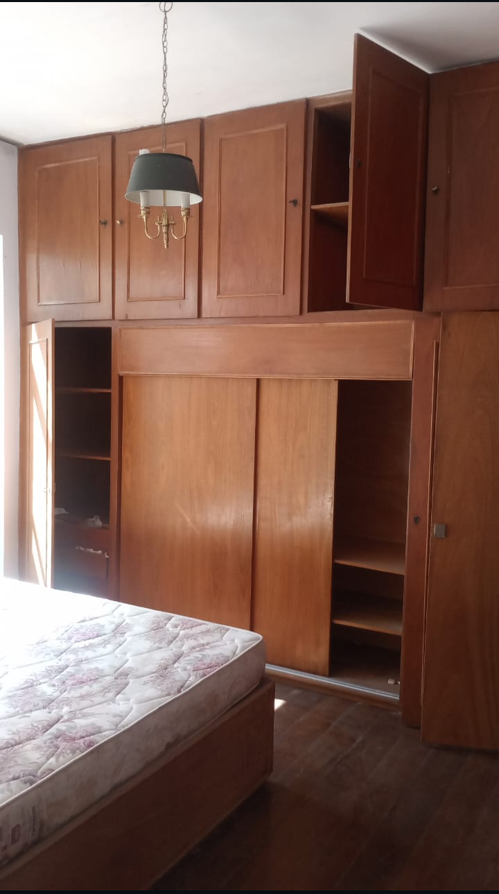

 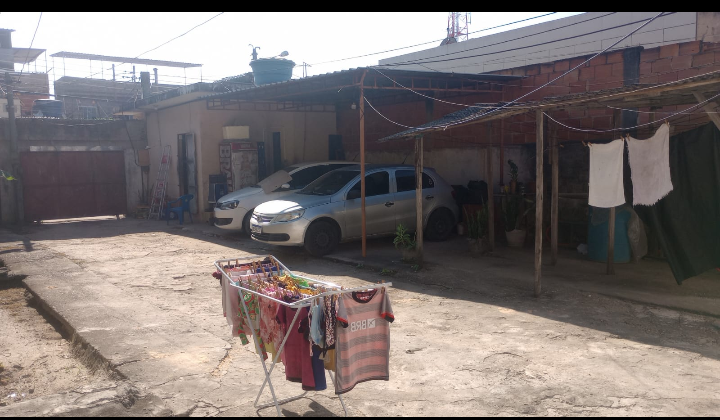
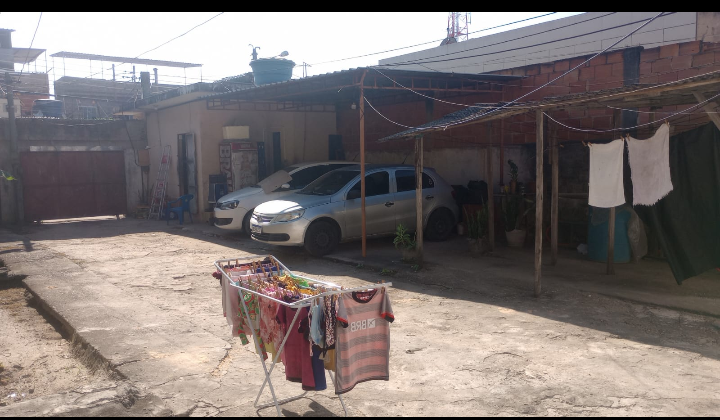

 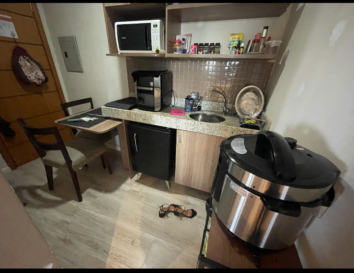
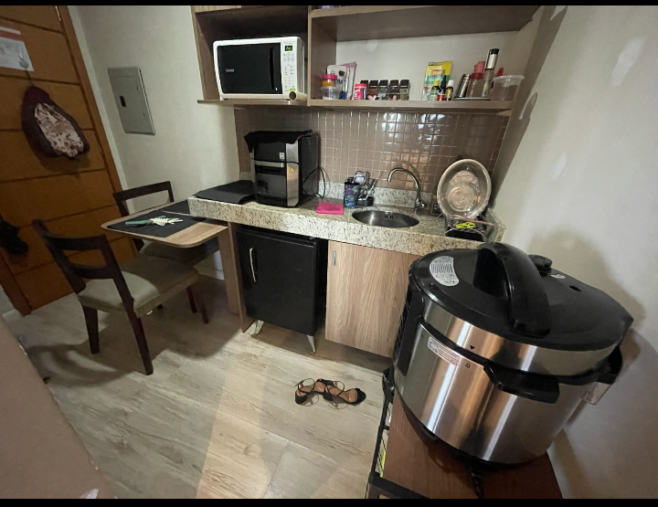